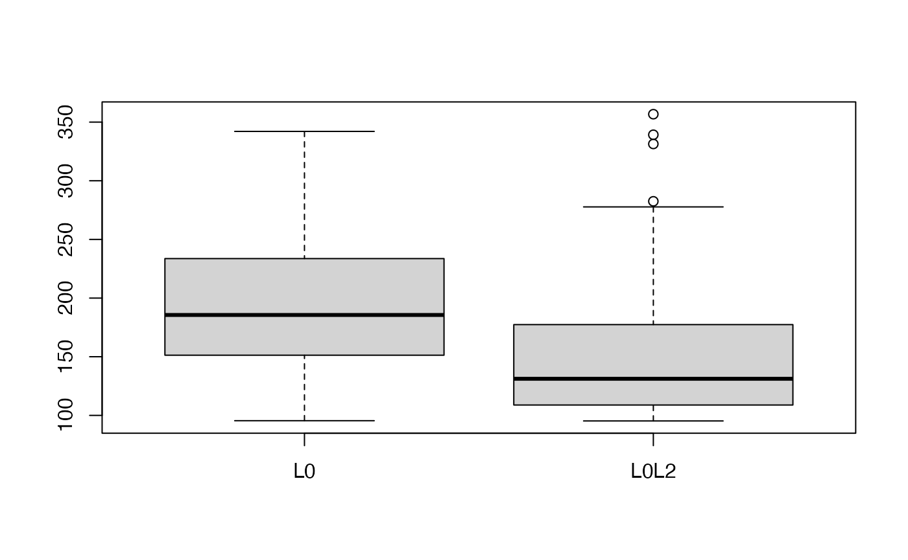

In some cases, especially under low signal-to-noise ratio (SNR) setting or predictors are highly correlated, the vallina type of \(L_0\) constrained model may not be satisfying and a more sophisticated trade-off between bias and variance is needed. Under this concern, the abess pakcage provides option of best subset selection with \(L_2\) norm regularization called the regularized bess. The model has this following form:
\[\begin{align} \min_\beta L(\beta) + \lambda \|\beta\|_2^2 \end{align}\]
To implement the regularized bess, you need to specify a value to the lambda in the abess() function. This lambda value corresponds to the penalization parameter in the model above. Here we give an example.
library(abess)
n <- 100
p <- 30
snr <- 0.05
dataset <- generate.data(n, p, snr = snr, seed = 1, beta = rep(c(1, rep(0 ,5)), each = 5), rho = 0.8, cortype = 3)
data.test <- generate.data(n, p, snr = snr, beta = dataset$beta, seed = 100)
abess_fit <- abess(dataset[["x"]], dataset[["y"]], lambda = 0.7)Let’s test the regularized best subset selection against the no-regularized one over 100 replicas in terms of prediction performance.
M=100
err.l0 = rep(0, M)
err.l0l2 = rep(0, M)
for(i in 1:M){
dataset <- generate.data(n, p, snr = snr, seed = i, beta = rep(c(1, rep(0 ,5)), each = 5), rho = 0.8, cortype = 3)
data.test <- generate.data(n, p, snr = snr, beta = dataset$beta, seed = i+100)
abess_fit <- abess(dataset[["x"]], dataset[["y"]], lambda = 0.7)
coef(abess_fit, support.size = abess_fit$support.size[which.min(abess_fit$tune.value)])
pe.l0l2 <- norm(data.test$y - predict(abess_fit, newx = data.test$x),'2')
err.l0[i]=pe.l0l2
abess_l0 <- abess(dataset[["x"]], dataset[["y"]])
coef(abess_l0, support.size = abess_l0$support.size[which.min(abess_l0$tune.value)])
pe.l0 <- norm(data.test$y -predict(abess_l0, newx = data.test$x), '2')
err.l0l2[i] = pe.l0
}
mean(err.l0)## [1] 194.9839
mean(err.l0l2)## [1] 151.4285
We see that the regularized best subset select indeed reduces the prediction error.